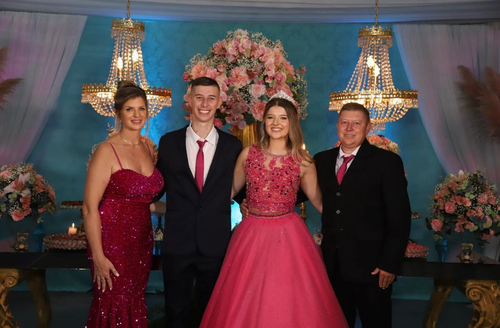

Sejam bem vindos
Agora vou contar a vocês um pouco sobre a minha família e o que ela significa para mim
Para mim, família significa tudo. União, amizade, companherismo, amor, ajuda e segurança. Pois eu vivo isso todos os dias com a minha família.
Minha história começou dia 04/02/2009 as 10:20 da manhã no hospital Ana Nery onde conheci minha família e nos tornamos 4. Então a maninha tão esperada pelo Nicolas tinha chegado e nossa família ficou completa.
Durante todos os anos da minha vida, aprendi muito com boas conversas, ensinamentos, discuções que acabam fazendo parte, mas sempre fomos muito unidos.
As pessoas da minha família, alem de tudo, são meus melhores amigos, com quem eu sei que posso contar para tudo e são eles quem tem os melhores conselhos. Me ajudam muito e sempre me dão todo o suporte para o meu futuro.
Eu tenho muito orgulho dos meus pais, eles sempre me deram um ótimo exemplo de trabalho, honestidade e união. Eles batalharam muito para estar onde estão hoje e sabendo que não foi nada fácil, eu os admiro muito.
Sou extremamente grata por tudo que fazem por mim e por sempre estarem ao meu lado em qual quer situação.
Agora vou falar um pouco sobre cada pessoa da minha família

Essa é minha mãe e minha melhor amiga, Suzana, ela tem essa cara linda e simpática e é mesmo, mas da uma ratiada com ela pra ver como ela nem vai olhar na tu cara.
Ela é tem muita força de vontade, não consegue parar um minuto, trabalha muito e ainda cuida de tudo e todos lá em casa. Te amo muito mãe, obrigada por tudo sempre!

Esse é meu pai, Jairo, tem uma carinha de bravo, de vez em quamdo é mesmo mas no geral é uma ótima pessoa, simpatico, carinhoso e faz de tudo por nós.
La em casa não sei quem é mais teimoso, mas acho que quem leva essa é meu pai, apesar de normalmente ele estar certo. Te amo muito pai, obrigada por tudo!

Esse é o Nicolas, meu irmão, eu e ele brigamos nossa vida toda, mas acho que com o tempo amadurecemos e ficamos mais próximos, nos tornamos amigos.
Ele continua sendo chato como todo irmão mais velho e eu entendo que as vezes ele só quer me proteger e me ver bem. Te amo mano!